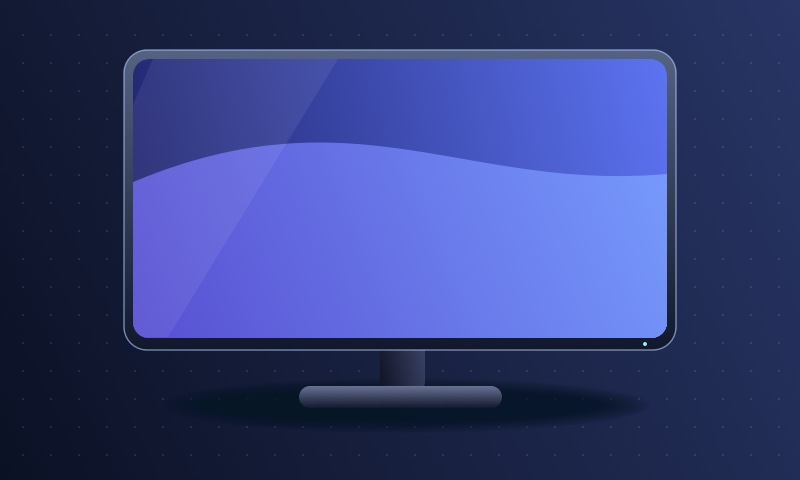

Сигналдан экранға дейін
Компьютер мониторы бейнесигналды экрандағы кескінге айналдырады. Панель технологиясы, ажыратымдылық пен жаңарту жиілігі кескіннің қалай көрінетініне әсер етеді. Порттар арқылы мониторға қандай құрылғыларды қосуға болатыны анықталады.

Сигнал
Бейнеадаптер кадрларды бейнеқосылым арқылы мониторға жібереді.
Сигналдың берілуі →Панель
LCD, OLED және CRT экрандары жарықты әртүрлі жолмен шығарады немесе оның өтуін реттейді.
Панель түрлерін қарау →Таңдау
Оқу, дизайн және ойын үшін монитордың әртүрлі қасиеттері маңызды.
Нұсқаларды салыстыру →